Analyse, préparation et documentation initiale du déploiement d'un serveur FOG Project pour la gestion d'image système Windows 10.
Synthèse administrative et opérationnelle de la première séance du projet Ghost Server.
| Champ | Valeur |
|---|---|
| Date | 04 juin 2026 |
| Numéro de séance | 01 |
| Membres présents | Hadjiu Ernest, Demeereleere Renan, Terroir Nicolas |
| Chargée du cours | Vanessa Robbe |
| Membre | Rôle officiel |
|---|---|
| Hadjiu Ernest | Coordinateur et Responsable Documentation |
| Demeereleere Renan | Technicien Infrastructure |
| Terroir Nicolas | Responsable Qualité et Tests |
FOG est un logiciel libre de déploiement d'images système, distribué sous licence GPL et utilisé en milieu éducatif comme en entreprise.
FOG est un serveur de gestion d'image système open source. Il s'installe sur une distribution Linux et expose une interface d'administration accessible via un navigateur web. Il s'appuie sur les services TFTP, HTTP, MySQL et un démon PXE pour permettre à des postes clients de démarrer sur le réseau, de capturer ou de recevoir une image disque, et d'exécuter des scripts d'installation post-déploiement.
Le nom du projet vient de l'acronyme Free Open-source Ghost, en référence à Symantec Ghost, l'outil historique de clonage de disque dont FOG reprend la logique fonctionnelle dans une version communautaire.
FOG sert à automatiser la mise en service de postes informatiques. Il évite l'installation manuelle, poste par poste, du système d'exploitation, des logiciels métier et des configurations spécifiques. Un parc de plusieurs dizaines ou centaines de machines peut ainsi être déployé ou restauré en quelques heures au lieu de plusieurs jours.
FOG sert également à standardiser les postes d'un parc. Tous les ordinateurs reçoivent strictement la même image, ce qui garantit un environnement homogène, plus simple à maintenir et à dépanner.
Une image système est une copie complète d'un disque dur ou d'une partition, stockée dans un fichier unique ou un ensemble de fichiers. Elle contient le système d'exploitation, les pilotes, les logiciels installés, les configurations utilisateur et toutes les données présentes sur le disque source au moment de la capture.
Une image système se distingue d'une sauvegarde de fichiers classique par le fait qu'elle restaure un système entièrement opérationnel et démarrable, et non un simple ensemble de documents.
Cinq avantages identifiés, dépassant le minimum de trois exigé par les consignes.
Six inconvénients identifiés, dépassant le minimum de trois exigé par les consignes.
FOG facilite principalement la maintenance corrective et la maintenance évolutive. Sur le volet correctif, lorsqu'un poste tombe en panne logicielle (corruption du système, infection, profil utilisateur cassé), la procédure de remise en état devient extrêmement courte. Plutôt que de diagnostiquer en profondeur, le technicien redéploie l'image de référence et restitue un poste fonctionnel en moins d'une heure.
Sur le volet évolutif, FOG permet de propager une nouvelle version d'image (mise à jour du système, nouveau logiciel métier, patch de sécurité critique) sur l'ensemble du parc de manière coordonnée.
À l'inverse, FOG n'aide ni la maintenance préventive individuelle, ni le diagnostic de panne matérielle, qui restent du ressort des outils classiques d'administration et de monitoring.
Après un incident de sécurité comme une attaque par rançongiciel ou une compromission d'un poste par un programme malveillant, la priorité opérationnelle est de revenir à un état fiable rapidement. FOG répond directement à ce besoin.
Plutôt que de tenter une désinfection dont on ne sera jamais certain qu'elle a tout éradiqué, le redéploiement d'une image saine garantit un retour à un état connu, vérifié et propre. Le poste compromis est entièrement réécrit, ce qui élimine les rémanences potentielles dans des partitions cachées ou des zones non scannées par un antivirus.
FOG s'inscrit ainsi dans une stratégie de cyber-résilience moderne, qui cherche à minimiser le temps de retour à la normale, ce que ITIL formalise sous le terme de RTO (Recovery Time Objective, objectif de durée maximale d'interruption admissible).
Non. FOG capture l'état du système à un instant donné, généralement celui d'un poste fraîchement préparé sans données utilisateur réelles. Une fois capturée, l'image vit indépendamment des évolutions du poste source. Si les utilisateurs créent ou modifient des fichiers sur leurs postes, ces données ne sont pas sauvegardées par FOG.
La logique de FOG est celle d'une image de référence, pas d'une copie périodique des données vivantes. Une vraie stratégie de sauvegarde implique des copies régulières, automatiques, datées, avec rotation et conservation, idéalement selon le principe 3-2-1 (trois copies sur deux supports différents dont une copie hors site).
FOG et la sauvegarde sont donc complémentaires, pas substituables. L'un protège le socle système, l'autre protège les données.
ITIL, acronyme de Information Technology Infrastructure Library, est un référentiel de bonnes pratiques de gestion des services informatiques. FOG s'y intègre sur deux processus clés.
FOG raccourcit drastiquement l'indicateur MTTR (Mean Time To Repair, durée moyenne de réparation). Un incident classé majeur sur un poste utilisateur peut passer de plusieurs heures à moins d'une heure de remise en état.
FOG contribue à la capacité de l'organisation à absorber un incident sans interruption durable de l'activité. Pour les contextes où plusieurs postes doivent rester opérationnels en permanence, la possibilité de redéployer rapidement un poste de remplacement préconfiguré est un élément clé du plan de continuité.
FOG Project a été retenu après comparaison de cinq solutions concurrentes.
| Critère | FOG | Clonezilla SE | WDS / MDT | Symantec | Acronis |
|---|---|---|---|---|---|
| Coût | Gratuit, GPL | Gratuit, GPL | Avec Win Server | Payant | Payant |
| OS serveur | Linux | Linux | Windows Server | Windows | Windows |
| Interface | Web | CLI | Console MMC | Propriétaire | Propriétaire |
| Multicast | Oui | Oui | Oui | Oui | Oui |
| Communauté | Active | Active | Massive | Limitée | Limitée |
| Adapté étudiant | Très fort | Fort | Conditionnel | Non | Non |
L'architecture repose sur trois portables reliés à un switch 8 ports physique, formant un segment réseau isolé.
| Hôte | Membre | Charge utile |
|---|---|---|
| PC master | Hadjiu Ernest | VM serveur FOG (Ubuntu Server) et VM source Windows 10 pour la capture |
| PC client 1 | Demeereleere Renan | VM cliente Windows 10 cible du déploiement |
| PC client 2 | Terroir Nicolas | VM cliente Windows 10 cible du déploiement |
| Élément | Adresse IP | Rôle |
|---|---|---|
| Serveur FOG | 192.168.50.10 | Statique |
| Pool DHCP clients | 192.168.50.100 à 192.168.50.200 | Distribué par FOG |
| Masque | 255.255.255.0 | / 24 |
Représentation graphique de l'architecture cible du lab Ghost Server.

| Élément | Recommandation |
|---|---|
| Processeur | x86-64, virtualisation matérielle activée dans le BIOS (VT-x ou AMD-V) |
| RAM hôte | 12 Go minimum (4 Go pour Windows hôte, 8 Go pour la VM serveur FOG) |
| Stockage libre | 80 Go minimum pour la VM FOG et le dépôt d'images |
| Interface réseau | RJ45 intégré ou adaptateur USB-Ethernet Gigabit |
| Élément | Recommandation |
|---|---|
| Processeur | x86-64, virtualisation matérielle activée |
| RAM hôte | 8 Go minimum (4 Go pour Windows hôte, 4 Go pour la VM cliente) |
| Stockage libre | 40 Go minimum pour la VM cliente |
| Interface réseau | RJ45 intégré ou adaptateur USB-Ethernet Gigabit |
| Élément | Recommandation |
|---|---|
| Switch | 8 ports Gigabit non managé (TP-Link TL-SG108 ou équivalent) |
| Câbles | 3 câbles Ethernet RJ45 catégorie 5e minimum, 1 à 2 mètres |
| Adaptateurs USB-Ethernet | Selon disponibilité des ports RJ45 sur les portables, Gigabit obligatoire |
| Logiciel | Postes concernés | Source |
|---|---|---|
| VirtualBox 7.x avec Extension Pack | Les trois portables | virtualbox.org |
| Ubuntu Server 22.04 LTS | Master Ernest | ubuntu.com |
| FOG Project, version stable | VM serveur Ernest | fogproject.org |
| Windows 10 Pro 22H2, ISO d'évaluation | Master et VMs cibles | microsoft.com |
Douze risques identifiés, dépassant largement le minimum de cinq exigé par les consignes.
| # | Risque | Impact | Probabilité | Mesure préventive |
|---|---|---|---|---|
| 1 | Image système corrompue à la capture ou au déploiement | Élevé | Moyenne | Vérification d'intégrité par hash, test sur un poste pilote avant masse |
| 2 | Perte de données utilisateur lors d'un redéploiement | Élevé | Moyenne | Procédure imposant une sauvegarde préalable, double validation |
| 3 | Conflit entre DHCP FOG et DHCP existant | Moyen | Élevée si non isolé | Isolation stricte du segment lab via switch dédié |
| 4 | Procédure documentée incomplète ou ambiguë | Élevé | Moyenne | Tests croisés par le Responsable Qualité, relecture systématique |
| 5 | Absence d'un membre lors d'une séance | Moyen | Moyenne | Espace de travail partagé, journal Agile à jour |
| 6 | Incompatibilité de format de VM entre VirtualBox et Hyper-V | Faible | Faible | Standardisation VirtualBox actée |
| 7 | Indisponibilité matérielle du switch ou des câbles | Élevé pour démo | Faible | Vérification du matériel via checklist |
| 8 | Droits administrateur insuffisants sur les hôtes | Moyen | Faible | Vérification préalable, demande formelle si nécessaire |
| 9 | Saturation de l'espace disque lors de la capture | Moyen | Faible | Vérification de l'espace libre, 80 Go minimum sur le master |
| 10 | Perte de la documentation par panne du portable master | Élevé | Faible | Synchronisation OneDrive automatique, sauvegarde hebdo sur clé USB |
| 11 | Faille de sécurité sur la VM FOG (mot de passe par défaut) | Moyen | Moyenne | Changement immédiat du mot de passe, services non utilisés désactivés |
| 12 | Mauvaise gestion de Sysprep sur l'image source | Moyen | Moyenne | Procédure Sysprep documentée et exécutée systématiquement |
Vingt-deux points de contrôle, dépassant le minimum de dix exigé par les consignes.